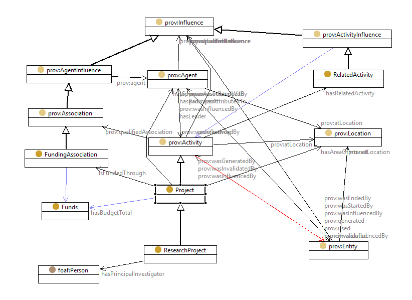

This document describes a core ontology for the description of a project, aimed at supporting linked data publishing of project descriptions across a number of domains. The ontology extends W3C [[PROV-O]]]] with typical features of a project description, including sub-activities, specific agent roles, and funding arrangements. It is expected to be specialized for applications that have more detailed requirements.
The namespace for terms in this ontology is: http://www.w3.org/ns/project#
The vocabulary defined in this document is also available in these non-normative formats: Turtle.
This is an initial draft produced for consideration by the W3C Data eXchange Working Group.
This document describes a core ontology for the description of a project, known as PROJECT. The project is a key unit of activity in modern business. A project is a time-bounded activity, in which one or more agent participants fill specific roles (e.g. project leader, sponsor or funder), which is typically structured as a set of sub-activities, and generates products. A project provides key context for many productive activities and their outputs, including datasets.
A number of previous initiatives have developed project ontologies. ... FOAF, DOAP, VIVO-ISF, dbPedia ...
The Project ontology is designed as an extension to the W3C [[PROV-O]] ontology, with a Project class specializing the Activity class by adding support for the key project-related concepts.
The PROJECT ontology is designed to enable publication of information describing projects, including research projects. It is not designed to support project management, though sub-activities are included. As far as possible PROJECT is intended to be domain-neutral. It is expected that domains and applications will specialize or extend this ontology for more specific purposes.
The ontology gives terms to support the representation of:
One specialization is included - the Research Project - which has been the subjecct of several predecessor designs that have informed the design of this ontology.
PROJECT extends the W3C [[PROV-O]] ontology. Otherwise, it has no dependencies except for the normal RDF/OWL infrastructure ([[RDF]], [[RDFS]], [[OWL2]]), Dublic Core for some ontology metadata, and [[SKOS]] to support some relationships between Role values.
A summary of the main classes and relationships in PROJECT is shown in the diagram below, including the key superclass prov:Activity from PROV-O.

We present two examples to illustrate the scope and some of the capabilities of the PROJECT ontology.
This example describes a recent public works project carried out in Melbourne, Victoria. It concerns a phase of an initiative to replace level-crossings on the suburban rail network. It was sponsored by the state government, who were also the sole funders. This phase involved the removal of four level crossings, each of which is modeled as a sub-activity (the description of only one is shown here). The project was led by a consortium with two members, the description of which is given using the W3C Organization Ontology. Three public transport bodies also participated. The project was completed several months early. A number of local businesses were negatively impacted during the course of the activities.
The level of detail shown here is intended only to illustrate the expressivity of the PROJECT ontology, and the use of structures from an external vocabulary (W3C ORG [[ORG]]) to complement.
ex:VictoriaLevelCrossingRemovalPhase1
rdf:type proj:Project ;
rdfs:label "Victoria level-crossing removal - phase 1" ;
proj:hasBudgetTotal [
rdf:type proj:SumOfMoney ;
rdfs:label "Level crossing removal phase 1 budget " ;
proj:moneyAmount "524000000"^^xsd:decimal ;
proj:moneyCurrency <https://dbpedia.org/resource/Australian_dollar> ;
] ;
proj:hasLeader ex:johnholland-kbr ;
proj:hasParticipant <http://www.metrotrains.com.au/> ;
proj:hasParticipant <https://www.ptv.vic.gov.au/> ;
proj:hasParticipant <https://www.vicroads.vic.gov.au/> ;
proj:hasSponsor <http://www.vic.gov.au/> ;
proj:hasSubActivity ex:BentleighLevelCrossingRemoval ;
proj:hasSubActivity ex:BurkeRoadLevelCrossingRemoval ;
proj:hasSubActivity ex:McKinnonRoadLevelCrossingRemoval ;
proj:hasSubActivity ex:NorthRoadLevelCrossingRemoval ;
proj:isFundedThrough [
rdf:type proj:FundingAssociation ;
rdfs:label "Level crossing removal project funder" ;
rdfs:seeAlso <http://www.johnholland.com.au/who-we-are/latest-news/john-holland-wins-level-crossing-removal-projects-in-victoria/> ;
rdfs:seeAlso <http://www.premier.vic.gov.au/contract-awarded-for-first-four-level-crossing-removals/> ;
proj:fundsProvided [
rdf:type proj:SumOfMoney ;
proj:moneyAmount "524000000"^^xsd:decimal ;
proj:moneyCurrency <https://dbpedia.org/resource/Australian_dollar> ;
] ;
prov:agent <http://www.vic.gov.au/> ;
] ;
proj:name "Victoria level-crossing removal - phase 1" ;
proj:plannedEndTime "2017-03-31T23:59:00"^^xsd:dateTime ;
proj:plannedStartTime "2015-10-01T00:00:00"^^xsd:dateTime ;
prov:atLocation <https://dbpedia.org/resource/Melbourne> ;
prov:endedAtTime "2016-10-31T00:00:00"^^xsd:dateTime ;
prov:startedAtTime "2015-10-01T00:00:00"^^xsd:dateTime ;
.
ex:McKinnonRoadLevelCrossingRemoval
rdf:type prov:Activity ;
rdfs:label "McKinnon Road level crossing removal" ;
proj:plannedEndTime "2017-03-31T00:00:00"^^xsd:dateTime ;
proj:plannedStartTime "2016-01-31T00:00:00"^^xsd:dateTime ;
prov:atLocation <https://dbpedia.org/resource/McKinnon_railway_station> ;
prov:endedAtTime "2017-10-31T00:00:00"^^xsd:dateTime ;
prov:qualifiedAssociation [
rdf:type prov:Association ;
prov:agent <https://www.zomato.com/melbourne/fabulous-fine-foods-ormond-mckinnon> ;
prov:hadRole ex:Negative-economic-impact ;
] ;
prov:startedAtTime "2016-01-31T00:00:00"^^xsd:dateTime ;
.
ex:johnholland-kbr
rdf:type org:FormalOrganization ;
rdfs:label "John Holland - KBR Joint Venture" ;
org:hasMembership [
rdf:type org:Membership ;
org:member <http://www.johnholland.com.au> ;
org:role ex:Joint-Venture-Partner ;
] ;
org:hasMembership [
rdf:type org:Membership ;
org:member <https://www.kbr.com/> ;
org:role ex:Joint-Venture-Partner ;
] ;
.
The core class in the ontology is proj:Project which is intended to be applicable to a broad range of project types. A project is an activity with a planned start and end time, a designated leader, a known sponsor and budget, and is modelled as a specialization of the prov:Activity class.
A project is typically organized through a set of sub-activities, which may be undertaken concurrently or consecutively, and may themselves be composed of further sub-activities. A project is often related to or influenced by other activities in addition to its sub-activities.
We distinguish one sub-class, the proj:ResearchProject, in which the leader(s) is known as a Principal Investigator, and which is classified according to its field of research.
There are a number of distinctive stakeholders in a project, in particular: a leader who is accountable for the delivery of project outcomes; a sponsor under whose authority the project is undertaken; funders; and project staff or participants. In some cases it is useful to provide specific details of a participant's role in the project. PROJECT provides a number of ways to represent the relationships of stakeholders to projects and activities.
The standard roles of leader, participant are each implemented as a directly named property from an prov:Activity to a prov:Agent, and sponsor as a directly named property from a proj:Project to a prov:Agent. These properties specialize the prov:wasAssociatedWith property.
Basic funding arrangements are captured through the proj:hasSponsor and proj:hasBudgetTotal properties. More complex arrangements, for example if multiple funders are involved, can be captured through the proj:isFundedThrough property, which links a funding agent with a funding amount in the context of a project. This property specializes the prov:qualifiedAssociation property.
The details of any other relationshp may be expressed using the prov:qualifiedAssociation property.
The following RDF namespace prefixes are used within this document. Use of a namespace does not imply endorsement of the associated data platform or vocabulary.
| Prefix | Namespace IRI | Source |
|---|---|---|
dbo |
http://dbpedia.org/ontology/ | dbPedia ontology |
dcat |
http://www.w3.org/ns/dcat# | Data Catalog Vocabulary [[DCAT]] |
dcterms |
http://purl.org/dc/terms/ | Dublin Core Metadata Initiative (DCMI) Metadata Terms |
doap |
http://usefulinc.com/ns/doap# | Description of a (software) project (DOAP) |
ex |
http://www.w3.org/ns/project/example/ | Examples for this document |
foaf |
http://xmlns.com/foaf/0.1/ | FOAF Vocabulary Specification |
obo |
http://purl.obolibrary.org/obo/ | Open Biomedical Ontologies (OBO) |
owl |
http://www.w3.org/2002/07/owl# | Web Ontology Language [[OWL2]] |
no namespace or proj |
http://www.w3.org/ns/project# | Project Ontology |
proji |
http://www.w3.org/ns/project/ | Individuals in the Project Ontology |
prov |
http://www.w3.org/ns/prov# | W3C Provenance Ontology |
rdf |
http://www.w3.org/1999/02/22-rdf-syntax-ns# | Resource Description Framework [[RDF]] |
rdfs |
http://www.w3.org/2000/01/rdf-schema# | RDF Schema vocabulary [[RDFS]] |
schemaorg |
http://schema.org/ | Schema.org |
skos |
http://www.w3.org/2004/02/skos/core# | Simple Knowledge Organization System (SKOS) [[SKOS-PRIMER]] |
vivo |
http://vivoweb.org/ontology/core# | VIVO-ISF |
Classes: | FundingAssociation | Project | RelatedActivity | ResearchProject | SumOfMoney |
Properties: | activityLeadingAssociation | activityParticipationAssociation | activitySponsorshipAssociation | fundsProvided | hasAreaOfInterest | hasBudgetTotal | hasFieldOfResearch | hasLeader | hasParticipant | hasPrincipalInvestigator | hasRelatedActivity | hasSponsor | hasSubActivity | isFundedThrough | isSubActivityOf | moneyAmount | moneyCurrency | name | objective | plannedEndTime | plannedStartTime | subActivityAssociation |
A formal activity with planned start and end dates, a leader, sponsors and a budget.
| RDFS Class: | proj:Project |
|---|---|
| Type: | owl:Class |
| subClassOf: | prov:Activity |
| Usage note: |
The name of the project.
| RDF Property: | proj:name |
|---|---|
| Type: | owl:AnnotationProperty |
| Domain: | proj:Project |
| subpropertyOf: | rdfs:label |
| Usage note: |
The objective of the project.
| RDF Property: | proj:objective |
|---|---|
| Type: | owl:AnnotationProperty |
| Domain: | proj:Project |
| subpropertyOf: | rdfs:comment |
| Usage note: |
The planned start date and time for an activity.
| RDF Property: | proj:plannedStartTime |
|---|---|
| Type: | owl:DatatypeProperty |
| Domain: | prov:Activity |
| Range: | xsd:dateTimeStamp |
| Usage note: |
The planned end date and time for an activity.
| RDF Property: | proj:plannedEndTime |
|---|---|
| Type: | owl:DatatypeProperty |
| Domain: | prov:Activity |
| Range: | xsd:dateTimeStamp |
| Usage note: |
The party (person or organization) responsible for leading an activity.
| RDF Property: | proj:hasLeader |
|---|---|
| Type: | owl:ObjectProperty |
| subPropertyOf: | prov:wasAssociatedWith |
| Usage note: |
The party (person or organization) who is sponsoring a project.
| RDF Property: | proj:hasSponsor |
|---|---|
| Type: | owl:ObjectProperty |
| Domain: | proj:Project |
| subPropertyOf: | prov:wasAssociatedWith |
| Usage note: |
The project budget or planned expenditure.
| RDF Property: | proj:hasBudgetTotal |
|---|---|
| Type: | owl:ObjectProperty |
| Domain: | proj:Project |
| Range: | proj:Funds |
| Usage note: |
A sum of money.
| RDF Class: | proj:SumOfMoney |
|---|---|
| Type: | owl:Class |
| Usage note: |
The numeric value of a sum of money, which must be scaled by a specified currency to get the actual value.
| RDF Property: | proj:moneyAmount |
|---|---|
| Type: | owl:DatatypeProperty |
| Domain: | proj:SumOfMoney |
| Range: | xsd:decimal |
| Usage note: |
The currency in which a sum of money is specified.
| RDF Property: | proj:moneyCurrency |
|---|---|
| Type: | owl:ObjectProperty |
| Domain: | proj:SumOfMoney |
| Usage note: | It is expected that the value of an individual will be a link (URI) to a defnition of the currency used. |
Association class to support description of a related activity.
| RDF Class: | proj:RelatedActivity |
|---|---|
| Type: | owl:Class |
| subClassOf: | prov:ActivityInfluence |
| Usage note: |
Link to a related activity association.
| RDF Property: | proj:hasRelatedActivity |
|---|---|
| Type: | owl:ObjectProperty |
| Domain: | prov:Activity |
| Range: | proj:RelatedActivity |
| Usage note: |
Link to a related activity association carrying the role "sub-activity".
| RDF Property: | proj:subActivityAssociation |
|---|---|
| Type: | owl:ObjectProperty |
| subPropertyOf: | proj:hasRelatedActivity |
| Usage note: |
Direct link to a subsidiary activity.
| RDF Property: | proj:hasSubActivity |
|---|---|
| Type: | owl:ObjectProperty |
| Domain: | prov:Activity |
| Range: | prov:Activity |
| Usage note: |
Direct link to a parent activity.
| RDF Property: | proj:isSubActivityOf |
|---|---|
| Type: | owl:ObjectProperty |
| inverseOf: | proj:hasSubActivity |
| Usage note: |
Direct link to a party (person or organization) participating in the activity.
| RDF Property: | proj:hasParticipant |
|---|---|
| Type: | owl:ObjectProperty |
| subPropertyOf: | prov:wasAssociatedWith |
| Usage note: |
Link to an association carrying the role "leader".
| RDF Property: | proj:activityLeadingAssociation |
|---|---|
| Type: | owl:ObjectProperty |
| subPropertyOf: | prov:qualifiedAssociation |
| Usage note: |
Link to an association carrying the role "participant".
| RDF Property: | proj:activityParticipationAssociation |
|---|---|
| Type: | owl:ObjectProperty |
| subPropertyOf: | prov:qualifiedAssociation |
| Usage note: |
Link to an association carrying the role "sponsor".
| RDF Property: | proj:activitySponsorshipAssociation |
|---|---|
| Type: | owl:ObjectProperty |
| subPropertyOf: | prov:qualifiedAssociation |
| Usage note: |
Association class to support description of a project funding arrangement.
| RDF Class: | proj:FundingAssociation |
|---|---|
| Type: | owl:Class |
| subClassOf: | prov:Association |
| Usage note: |
Link to a description of a project funding arrangement.
| RDF Property: | proj:isFundedThrough |
|---|---|
| Type: | owl:ObjectProperty |
| Domain: | proj:Project |
| Range: | proj:FundingAssociation |
| Usage note: |
Link to a sum of money.
| RDF Property: | proj:fundsProvided |
|---|---|
| Type: | owl:ObjectProperty |
| Range: | proj:SumOfMoney |
| Usage note: |
A research project.
| RDFS Class: | proj:ResearchProject |
|---|---|
| Type: | owl:Class |
| subClassOf: | proj:Project |
| Usage note: |
The person who acts as principal investigator on the research project.
| RDF Property: | proj:hasPrincipalInvestigator |
|---|---|
| Type: | owl:ObjectProperty |
| Domain: | proj:ResearchProject |
| Range: | foaf:Person |
| Usage note: |
The field of research of the research project.
| RDF Property: | proj:hasFieldOfResearch |
|---|---|
| Type: | owl:ObjectProperty |
| Domain: | proj:ResearchProject |
| Range: | skos:Concept |
| Usage note: | The value is usually taken from a curated vocabulary, such as ANZSRC Fields of Research |